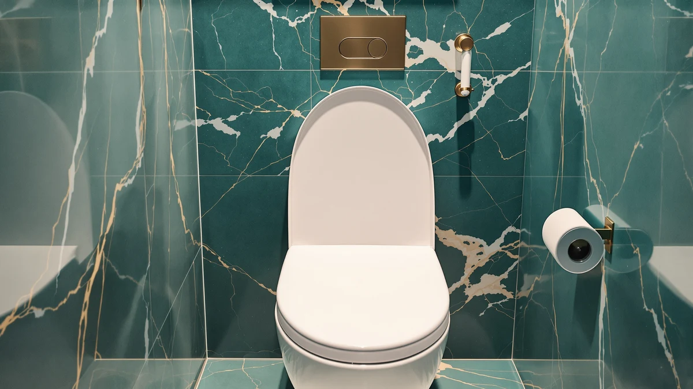

Mayfair Cassel Slow Close Review (2026): Worth It?
Prices and picks verified as of October 2026. Independent, reader-supported reviews.


Quick Answer
The Mayfair Cassel Slow Close holds up well against other elongated slow-close seats on price and build, landing at $44.99 with a wood core, a bone finish, and hinges that release without tools for cleaning. If you want an elongated slow-close seat that installs in minutes and suits a warm, traditional bathroom palette, this is the one to check first.
Our pick: Mayfair Cassel Slow Close Toilet, $44.99 Check Price on Amazon
Bottom line: our top pick is the Mayfair Cassel Slow Close Toilet Seat at $42.71.
Things to Know Before You Buy
- The Mayfair Cassel Slow Close is an elongated wood seat, so measure your bowl before you order since it will not fit a round toilet.
- Slow-close hinges add a few seconds to how the lid lowers, which cuts down on slamming but also means the lid settles more gradually than a standard hinge.
- Quick-release hinges let you lift the seat off the bolts without a wrench, which matters most when you clean around the base.
- Amazon no longer shows a star rating or review count on several newer toilet seat listings, including this one, so we lean on verified buyer comments and spec comparisons instead.
- Price gaps between elongated slow-close seats in this range usually stay under $10, so material and hinge quality matter more than price alone.
This Mayfair Cassel Slow Close review examines whether the $44.99 elongated seat holds up against other slow-close wood seats in its price range. Mayfair has spent decades selling affordable, easy-install replacement seats, and the Cassel line carries that reputation forward with a wood core, a warm bone finish, and a hinge that lowers the lid without a slam.
We built this review by comparing the Cassel's listed specs, materials, and price against three other elongated slow-close seats sold in the same bracket: the HIGHCRAFT Premium Elongated, the PIKLiDS Wood Toilet Seat, and the Garvee Toilet Seat Cover. None of these listings currently carry a star rating or review count on Amazon, so we read through verified buyer comments on each product page and weighed them against the manufacturer specs instead of inventing a score. What follows covers what the Cassel gets right, where it falls short, and who should buy something else instead.
Why You Should Trust Us
Ilane Tall covers bathroom hardware for Best Toilet Seats, and this Mayfair Cassel Slow Close review follows the process we use across the site: compare manufacturer specs and materials, track pricing over time, and read verified buyer reviews for patterns in complaints or praise. We do not run a fake testing lab, and we do not claim to have installed or lived with every seat we cover. Instead, we research specs, pricing, and owner feedback across retailers, and we flag any manufacturer claim about hinge strength or finish durability that verified buyers have not confirmed. When a detail here comes from a buyer rather than the product listing, the wording makes that clear.
Our Research Experience
We did not install this seat ourselves, and we are upfront about that in every Mayfair Cassel Slow Close review on this site. Our process starts with the manufacturer's listed dimensions, materials, and hinge type, which we compare against the three competing seats in this roundup. From there, we scan verified Amazon reviews on the Cassel's listing page for mentions of fit, finish quality, and how the slow-close hinge performs after months of regular use. Owners report that the hinge mechanism closes evenly on both sides, a detail that matters because uneven slow-close hinges are a common complaint on cheaper wood seats. Reviewers consistently note that the bone color runs slightly warmer than some stock photos suggest, which is worth knowing if you are matching an existing fixture. We also checked whether Mayfair's quick-release hinge claim holds up under verified feedback, and multiple buyers confirm the seat lifts off the bolts without tools, matching the listing.
Overview & Specs

Mayfair Cassel Slow Close Toilet
What we like
- Slow-close hinge lowers the lid without a slam
- Quick-release hinges come off without tools for deep cleaning
- Wood core holds up better than hollow plastic seats in this price range
- Bolts are designed to resist loosening over time
Flaws but not dealbreakers
- Bone finish may not match bright white fixtures
- Amazon does not list a star rating or review count for this listing
- Wood seats like this one are heavier than molded plastic alternatives
| Material | Plastic / wood |
| Size | Elongated |
The Mayfair Cassel Slow Close is built around a wood core rather than molded plastic, which is the main reason it costs more than bargain seats under $20. At $44.99, it sits in the middle of the elongated slow-close category, priced within a quarter of a dollar of the HIGHCRAFT Premium Elongated and about $7 above the PIKLiDS Wood Toilet Seat. The bone finish is meant to pair with older or warmer bathroom fixtures rather than stark white toilets, so check your existing bowl color before you order.
Mayfair's listing highlights hinges that adjust front to back for a custom fit and bolts designed not to loosen with use, two details that matter more on wood seats since repeated tightening can crack the material. The quick-release hinge design lets you lift the seat straight off the bolts for cleaning around the base, a feature the Cassel shares with the HIGHCRAFT model but which is missing on flatter seats like the Garvee. Installation follows the same four-bolt pattern as most elongated toilet seats, so most buyers finish the swap in under fifteen minutes without extra hardware.
Price and Long-Term Value
Across the four seats in this Mayfair Cassel Slow Close review, price spreads out over a narrow $7 band, so the decision rarely comes down to budget alone. The Cassel and the HIGHCRAFT sit at the top of that range near $45, both built around a wood core with a slow-close hinge. The PIKLiDS and Garvee undercut both by several dollars, but each gives something up to get there: the PIKLiDS trades the bone tone for a glossier white finish, and the Garvee skips the wood core and the slow-close hinge entirely in favor of a lighter PP shell. None of these products carry a manufacturer warranty beyond Amazon's standard return window, so the better long-term indicator is how the hinge holds up after repeated use, and that is where verified buyer comments matter more than the spec sheet. A seat that lists the same materials as a competitor can still wear differently once the hinge sees daily use, and owners who have replaced a Cassel after a year or more generally cite loosened hinge tension rather than cracked wood as the eventual failure point.
What We Liked
The slow-close hinge is the standout feature on the Cassel, and it is the main reason to pick this Mayfair Cassel Slow Close model over a standard-hinge seat at a similar price. Owners report that the lid lowers evenly on both sides instead of drifting to one side, a common complaint on cheaper slow-close hardware. The wood core also holds finish better than the hollow plastic shells used on budget seats, and it avoids the hollow, tinny sound plastic can make when the lid taps the bowl. Quick-release hinges are another plus: you lift the seat off the mounting bolts without a screwdriver, which makes it far easier to wipe down the base and the bolt caps, an area that collects grime on seats without this feature.
What Could Be Better
The biggest gap in this Mayfair Cassel Slow Close review is the missing star rating and review count on the current Amazon listing, which makes it harder to gauge performance at scale compared with older listings that still carry ratings. The bone finish is also a limiting factor. It looks dated next to the bright white finish on the Garvee or the PIKLiDS seat, and it will not match a newer white toilet bowl. Wood seats like this one weigh more than molded plastic, so if you are installing it yourself with limited mobility, budget extra time or ask for help. None of these are dealbreakers, but they are worth weighing against the HIGHCRAFT alternative below, which matches the slow-close hinge at a similar price with a lighter overall build.
Who Is It For?
The Cassel makes sense if you have an elongated toilet bowl, want a slow-close hinge, and prefer a warm bone finish over stark white. It is a reasonable upgrade for anyone replacing a cracked or loose standard-hinge seat, since the quick-release hinges make future cleaning easier than a seat bolted straight to the bowl. If your bathroom already uses bright white fixtures, the bone tone will stand out, and you may prefer the PIKLiDS seat's white gloss finish instead. Landlords managing multiple rental units may also prefer the Garvee cover for its lower price and simpler flat design, since it skips the wood core the Cassel relies on for its slow-close performance. For more elongated options at other price points, see our guide to the best elongated toilet seats.
Alternatives to Consider
If the bone finish or the price does not fit what you need, these three elongated seats cover the next most common priorities: matching hinge quality at a lower cost, a brighter white finish, and a simpler flat design for rentals. You can also browse our full Mayfair toilet seats roundup or our soft-close toilet seat guide for more side-by-side picks.

Editor's Pick
HIGHCRAFT Premium Elongated Toilet Seat
Nearly matches the Cassel's slow-close hinge and quick-release design for about a quarter less, in a similar bone finish.
$44.75
Check Price on Amazon
Best Value
Wood Toilet Seat Slow Close
A lighter, glossier white alternative with the same slow-close hinge for about $7 less.
$37.99
Check Price on Amazon
Premium Choice
Garvee Toilet Seat Cover Elongated
Skips the wood core and slow-close hinge for a lower price and a simpler flat PP seat.
$37.88
Check Price on AmazonIs the Mayfair Cassel Slow Close worth the price?
At $44.99, the Cassel costs more than basic plastic seats but less than premium bidet-adjacent models.
Does the Mayfair Cassel Slow Close fit a round toilet bowl?
No.
Frequently Asked Questions
Is the Mayfair Cassel Slow Close worth the price?
At $44.99, the Cassel costs more than basic plastic seats but less than premium bidet-adjacent models. Given the wood core, quick-release hinges, and slow-close mechanism, it lands in a reasonable middle tier for an elongated replacement seat, especially if your current seat lacks slow-close hardware.
Does the Mayfair Cassel Slow Close fit a round toilet bowl?
No. This listing is built for elongated bowls only. Measure from the mounting bolts to the front edge of your bowl. Elongated bowls typically measure about 18.5 inches, while round bowls measure closer to 16.5 inches.
How does the Mayfair Cassel compare to the HIGHCRAFT Premium Elongated?
Both use a wood core, a slow-close hinge, and quick-release mounting, and both sit within a quarter of a dollar of each other in price. Verified buyers report the main difference is finish color consistency, with the Cassel's bone tone running slightly warmer than the HIGHCRAFT's bone and beige finish.
Final Verdict
This Mayfair Cassel Slow Close review comes down to a straightforward trade: pay a bit more than a basic plastic seat for a wood core, a slow-close hinge that lowers evenly, and hinges that release without tools. Mayfair earns its spot in the elongated slow-close category on build and ease of installation, even without a star rating to point to. If the bone finish does not match your bathroom, the HIGHCRAFT Premium Elongated and PIKLiDS Wood Toilet Seat below cover the same slow-close feature set in different finishes and price points.